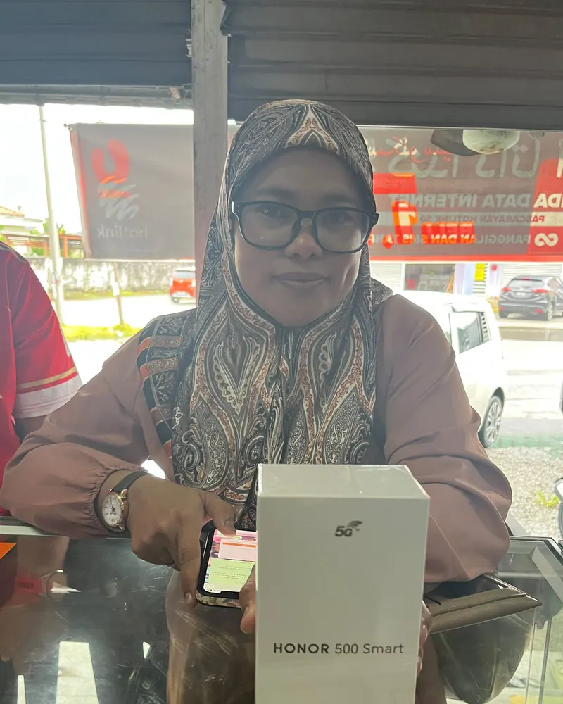

Telco Paling Bagus di Kota Bharu: Cara Pilih Line yang Betul untuk Anda

Soalan paling kerap kami terima di kaunter Asia Berkat, Kota Bharu: "Telco mana paling bagus?" Jawapan jujurnya — tiada satu telco yang terbaik untuk semua orang. Line yang laju di Jalan Sultanah Zainab belum tentu sama kuat di rumah anda di Pengkalan Chepa atau Kubang Kerian. Yang paling bagus ialah telco yang padan dengan tempat anda guna telefon, cara anda guna, dan bajet anda.
Faktor 1: Liputan di tempat anda paling kerap berada
Liputan rangkaian berbeza ikut kawasan, malah ikut bangunan. Isyarat di luar rumah mungkin penuh, tetapi lemah di dalam bilik atau di tingkat bawah kedai. Sebelum pilih telco, fikirkan tiga lokasi utama anda:
- Rumah — tempat anda guna data paling banyak (YouTube, TikTok, panggilan video).
- Tempat kerja / sekolah — penting untuk panggilan dan WhatsApp.
- Laluan harian — contohnya jalan ke Pasir Mas, Tumpat atau Rantau Panjang.
Cara uji liputan sebelum langgan:
- Tanya jiran atau rakan sekerja telco apa yang mereka guna dan bagaimana isyaratnya di dalam bangunan.
- Semak peta liputan rasmi di laman web telco (contohnya peta liputan U Mobile).
- Cuba dahulu dengan simkad prabayar — murah, tiada kontrak, boleh guna seminggu dua untuk uji.
- Untuk telefon yang menyokong eSIM, U Mobile ada ULTRA5G Trial percuma: 10GB data + panggilan tempatan tanpa had selama 7 hari.
Faktor 2: Cara anda guna telefon
Pelan yang "paling bagus" untuk pelajar berbeza dengan pelan untuk peniaga online atau keluarga. Ini panduan ringkas berdasarkan pelan yang kami uruskan (harga Nov 2026):
| Jenis pengguna | Contoh pelan | Harga |
|---|---|---|
| Guna ringan (WhatsApp, Facebook) | CelcomDigi 5G Hyper 30 — 50GB, prabayar | RM30 / 30 hari |
| Data berat (video, hotspot) | CelcomDigi 5G Power 45 — tanpa had (FUP 250GB) | RM45 / 30 hari |
| Kerap ke Thailand / Singapura | CelcomDigi 5G Power+ 55 / 65 — perantauan tanpa had SG, ID & TH | RM55 / RM65 |
| Nak telefon baharu sekali | U Mobile ULTRA Postpaid 68 — 1,000GB + telefon 5G RM0 | RM68 / bulan |
| Keluarga (4 orang) | U Mobile ULTRA Family 128 — 4 talian, 1,000GB dikongsi | RM128 / bulan |
Tinggal dekat sempadan seperti Rantau Panjang atau Pengkalan Kubor dan kerap ke Thailand? Pilih pelan yang ada perantauan Thailand — elak bil mengejut.
Faktor 3: Bajet dan kelayakan
- Prabayar — tiada semakan kelayakan, kawal belanja, sesuai untuk cuba-cuba.
- Pascabayar — biasanya lebih banyak data untuk harga sama dan boleh "claim" telefon melalui pelan, tetapi tertakluk kepada semakan kelayakan telco.
- Pakej telefon + pelan — contohnya pakej Celcom dengan bayaran muka RM279 dan RM70 sebulan (kontrak 24 bulan), atau Unifi Mobile + Nubia A77 RM59 sebulan + SST.
Pernah ditolak kelayakan? Jangan putus asa — ada pilihan dengan bayaran pendahuluan. Staf kami boleh bantu semak.
Telco yang boleh anda urus di Kota Bharu
Di dua cawangan Asia Berkat di Kota Bharu, anda boleh urus 9 rangkaian di satu kaunter: Celcom, Digi, Maxis, Hotlink, U Mobile, Unifi Mobile, Tune Talk, XOX dan redONE. Jadi anda boleh bandingkan pilihan secara terus tanpa perlu ke banyak kedai.
- Beris Jejawi — Lot 403, Kg Beris Jejawi, Jalan Padang Tembak, Taman Orkid, 16100 Kota Bharu
- Kemumin — Lot 1902-2, Kampung Kemumin, Jalan Sultanah Zainab II, 16100 Kota Bharu
Buka setiap hari 9:00 pagi – 6:00 petang, kecuali hari Jumaat.
5 langkah pilih telco paling bagus untuk anda
- Senaraikan lokasi utama anda (rumah, kerja, laluan harian).
- Tanya pengalaman jiran dan semak peta liputan.
- Uji dengan prabayar atau trial percuma sebelum ambil kontrak.
- Kira berapa data yang anda guna sebulan (lihat di Tetapan → Data mudah alih).
- Bandingkan pelan dan pakej telefon di satu tempat — kemudian baru buat keputusan.
Soalan lazim
Telco mana paling bagus di Kota Bharu?
Tiada satu telco yang terbaik untuk semua orang. Telco paling bagus ialah yang liputannya kuat di rumah dan tempat kerja anda, sesuai dengan cara anda guna data, dan dalam bajet. Cara terbaik ialah uji dahulu dengan prabayar atau trial percuma.
Bagaimana nak uji liputan sebelum langgan pascabayar?
Tanya jiran, semak peta liputan rasmi telco, dan cuba simkad prabayar selama seminggu dua. Bagi telefon eSIM, U Mobile menawarkan ULTRA5G Trial percuma 10GB selama 7 hari.
Boleh tukar telco tanpa tukar nombor?
Boleh, melalui pindah nombor (port-in). Nombor anda kekal sama. Sesetengah telco memberi insentif — contohnya U Mobile memberi rebat port-in RM120 dan diskaun RM10 selama 12 bulan untuk pelan tertentu.
Di mana nak urus line telefon di Kota Bharu?
Asia Berkat ada dua cawangan di Kota Bharu (Beris Jejawi dan Kemumin) yang menguruskan 9 rangkaian telco. Buka 9:00 pagi hingga 6:00 petang setiap hari kecuali Jumaat. WhatsApp 017-380 5112.
Harga dan pelan seperti diiklankan oleh syarikat telco pada November 2026, tertakluk kepada perubahan, liputan dan semakan kelayakan. Sila sahkan dengan staf kami sebelum mendaftar.